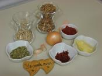
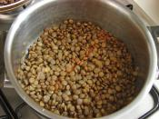
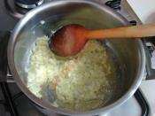
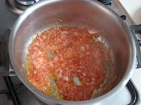
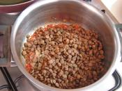
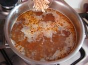
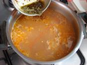
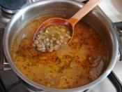

Erişteli Yeşil Mercimek Yemeği
Kökeni Mezopotamya'ya dayanan yeşil mercimek; salata, çorba ve ana yemeklerin içerisinde kullanılır. Türkiye'de Güneydoğu Anadolu'da yetiştirilen bu besin, demir deposu olarak bilinir. Bu yüzden anemi ve kansızlığın giderilmesinde etkilidir. Bağışıklık sistemini güçlendirmek için, haftada bir kez tüketilmesi önerilir.
Hazırlanma süresi: 20dk
pişirme süresi: 30dk
kaç kişilik: 6 kişilik
pişirme süresi: 30dk
kaç kişilik: 6 kişilik
malzemeler
- 1 yemek kaşığı tereyağı
- 1 soğan
- 1 su bardağı haşlanmış yeşil mercimek
- 100 gr erişte
- 8 su bardağı su
- Tuz
- Karabiber
NASIL YAPILIR?
- Ispanak harcını hazırlamak için; sıvı yağ ve mantarı, mantarlar suyunu salıp çekene dek kavurun. 
- Üzerine patates, soğan, tuz ve karabiber ilave edip 6-7 dakika daha kavurun. 
- Ispanak da ilave edip tencerenin kapağını kapatın ve 3-4 dakika kapağını açmadan pişirin. 
- Ardından kapağı açıp karıştırın. Ocağın altını kapatıp karışımı sufle veya güveç kaplarına pay edin. 
- Beşamel sos için; tereyağı, sıvı yağ ve unu kokusu çıkana dek kavurun. (Yaklaşık 2 dakika) 
- Üzerine süt, tuz ve rendelenmiş muskat ilave edip koyulaşana dek pişirin. 
- Güveçlere pay ettiğiniz ıspanak harcının üzerine beşamel sosu gezdirin. 
- Son olarak rendelenmiş kaşar peynirini de ekleyip 190 derece fırında 20 dakika, üzeri kızarana kadar pişirin. 
- Üzeri kızarmış olan ıspanak grateni sıcak olarak servis edin. Afiyet olsun!